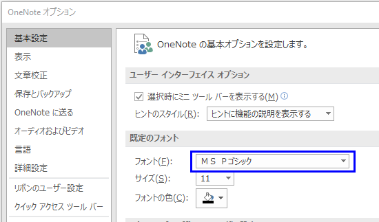
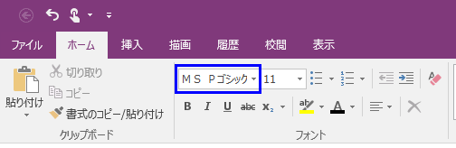
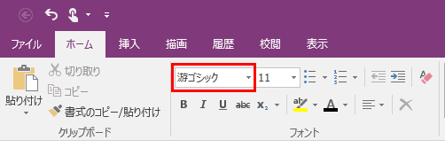

(※ 2016 年 11 月 29 日に Office Support Team Blog JAPAN に公開した情報のアーカイブです。)
こんにちは、Office サポートの町口です。
本記事では新たに確認された、OneNote 2016 で既定のフォントを設定していても、全角入力から半角入力にすると「遊ゴシック」に切り替わる問題について説明します。
2017/10/18 Update
[対処方法] セクションに修正プログラム (クイック実行形式) の情報を追記しました。
2018/10/30 Update
[対処方法] セクションに修正プログラム (Windows インストーラー形式) の情報を追記しました。
現象
OneNote 2016 でオプションやグループポリシーで、既定のフォントを「ＭＳ Ｐゴシック」等に設定していても、
全角入力から半角入力にすると「遊ゴシック」に切り替わります。
再現手順
- OneNote 2016 を起動します。
- [ファイル] タブの [オプション] をクリックし、[基本設定] - [既定のフォント] - [フォント] のプルダウンを「ＭＳ Ｐゴシック」に設定して [OK] をクリックします。

- ノートに全角で文字列を入力します。 ここでは例として「あ」と入力します。このときは、既定のフォントに設定した「ＭＳ Ｐゴシック」で入力されます。

- [半角/全角] キーを押下して、半角で文字列を入力します。 ここでは例として「a」と入力します。
結果 :
手順 4 で入力した a が「游ゴシック」で入力されます。
以降は全角入力に切り替えても「游ゴシック」で入力されます。

補足 :
OneNote 2016 の既定のフォントは、Office 2016 管理用テンプレートを利用して、以下のポリシーで設定することもできます。
* Office 2016 の管理用テンプレート
Office 2016 Administrative Template files (ADMX/ADML) and Office Customization Tool
https://www.microsoft.com/en-us/download/details.aspx?id=49030
* 設定項目
[Microsoft OneNote 2016]
- [OneNote のオプション]
- [編集]
- [既定のフォント名]
!!2018/10/30 Update!!
対処方法
クイック実行形式 (C2R) と Windows インストーラー形式 (MSI) のそれぞれについて説明します。
(1) クイック実行形式 (C2R)
========================================
バージョン 1709 (ビルド 8528.2139 クイック実行) で修正しました。
2017 年 10 月 17 日以降、更新プログラム チャネル「月次チャネル/Monthly Channel」でバージョン 1709 (ビルド 8528.2139 クイック実行) を受信することができます。
[ファイル] – [アカウント] – [更新オプション] の [今すぐ更新] や ODT を利用して、バージョン 1709 (ビルド 8528.2139 クイック実行) 以上のバージョンに更新してください。
現時点では、「半期チャネル(対象指定)/Semi-Annual Channel (Targeted)」では2018 年3 月に、
「半期チャネル/Semi-Annual Channel」では2018 年7 月の配信を予定しています。
(2) Windows インストーラー形式 (MSI)
========================================
以下の更新プログラムで修正しました。
4022163 OneNote 2016 (KB4022163) の更新プログラムを 2018 年 6 月 5日
参考情報
クイック実行版と MSI 版との見分け方については、以下の記事を参照してください。
タイトル : クイック実行形式 (C2R) と Windows インストーラー形式 (MSI) を見分ける方法
URL : http://blogs.technet.microsoft.com/officesupportjp/?p=725
更新プログラム チャネルについては、以下の記事を参照してください。
タイトル : Office 365 ProPlus 更新プログラムの管理に関する今後の変更の概要
URL : https://support.office.com/ja-jp/article/Office-365-ProPlus-%E6%9B%B4%E6%96%B0%E3%83%97%E3%83%AD%E3%82%B0%E3%83%A9%E3%83%A0%E3%81%AE%E7%AE%A1%E7%90%86%E3%81%AB%E9%96%A2%E3%81%99%E3%82%8B%E4%BB%8A%E5%BE%8C%E3%81%AE%E5%A4%89%E6%9B%B4%E3%81%AE%E6%A6%82%E8%A6%81-78B33779-9356-4CDF-9D2C-08350EF05CCA
ODT (Office 展開ツール) については、以下の記事を参照してください。
タイトル : 概要: Office 展開ツール
URL : https://technet.microsoft.com/ja-jp/library/jj219422.aspx
本情報の内容 (添付文書、リンク先などを含む) は、作成日時点でのものであり、予告なく変更される場合があります。